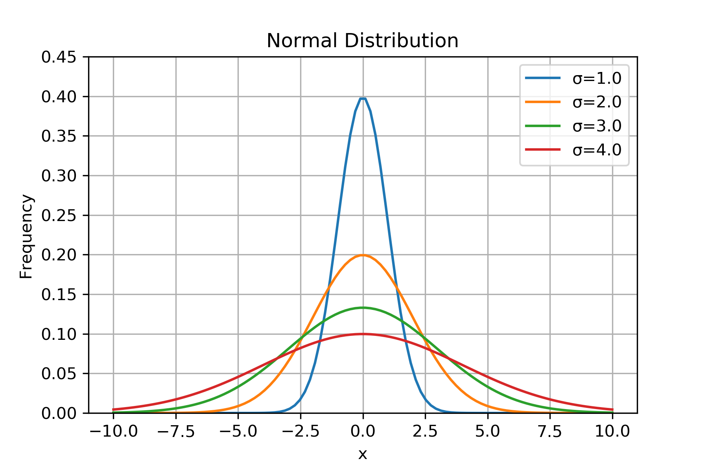
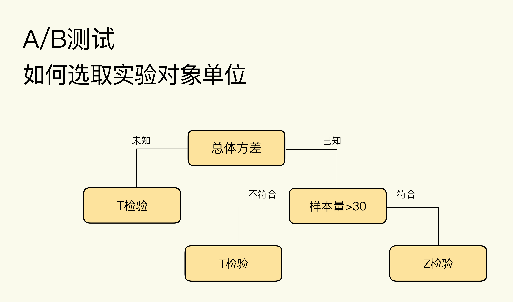

在下面的内容中，我们将会讲到一个定理、两个分布和三个概念：
- 一个定理：中心极限定理。
- 两个分布：正态分布和二项分布。
- 三个概念：方差，标准差和 z 分数。
A/B 测试的理论基础是假设检验（Hypothesis Testing），而在A/B测试假设检验中，“检验”是最核心也是最重要的，目的是为了验证我们提出的假设是否正确。而选取哪种检验方法，取决于指标的统计属性。
指标的统计属性
在实际业务中，我们常用的指标通常为以下两类：
均值类指标：例如用户的平均使用时长、平均购买金额、平均购买频率等等。
概率类指标：例如用户点击的概率（点击率）、转化概率（转化率）、购买概率（购买率）等等
所以，A/B 测试指标的统计属性，其实就是要看这些指标到底服从什么概率分布。在这里我们首先给出结论：
在数量足够大时，均值类指标服从正态分布；概率类指标本质上服从二项分布，但当数量足够大时，也服从正态分布。
下面将会给出这一结论涉及的相关统计学知识。
正态分布（Normal Distribution）
正态分布是 A/B 测试的指标中最主要的分布，是计算样本量大小和分析测试结果的前提。在统计上，如果一个随机变量 x 的概率密度函数（Probability Density Function）是：
那么，x 就服从正态分布。其中 ，μ为x的平均值（Mean），σ为x的标准差（Standard Deviation），n为随机变量x的个数，xi为第i个x的值。
随机变量 x 服从正态分布时的概率密度函数如下：
通过概率密度函数可知，距离平均值μ越近的值出现的概率越高。除了平均值μ，你还能在概率密度函数中看到另一个非常重要的参数：标准差σ。σ通过计算每个随机变量的值和平均值μ的差值，来表征随机变量的离散程度（偏离平均值的程度）。
接下来，我们就来看看标准差σ是怎么影响随机变量的分布的。为了方便理解，我们用 Python 做一个简单的模拟，选取服从正态分布的随机变量 x，其平均值μ=0；分别把 x 的标准差σ设置为 1.0、2.0、3.0、4.0，对应的概率密度分布如下（代码参见附录一）：

从上图可以看出来，σ越大，x 偏离平均值μ的程度越大，x 的取值范围越广，波动性越大，直方图越向两边分散。方差（Variance）则是标准差的平方。有了方差和标准差，我们就可以描述业务指标的离散程度了，但要计算出业务指标的波动范围我们还差一步，这一步就是 z 分数。
z 分数其实是标准正态分布（Standard Normal Distribution），即平均值μ=0、标准差 σ=1 的正态分布中的一个概念。标准正态分布的直方图如下所示：
这里的横轴就是 z 分数（Z Score），也叫做标准分数（Standard Score）：
事实上，任何一个正态分布都可以通过标准化（Standardization）变成标准正态分布。而标准化的过程，就是按照上面这个公式把随机变量 x 变为 z 分数。 z 分数的值代表 x 的不同取值偏离平均值 μ 多少个标准差 σ。比如，当 z 分数等于 1 时，说明该值偏离平均值 1 个标准差σ。
中心极限定理（Central Limit Theorem）
中心极限定理描述的是均值类变量的特性：当样本量足够大时，均值类变量会趋近于正态分布。
中心极限定理的数学证明和推理过程十分复杂，但只要我们了解它的原理即可：不管随机变量的概率分布是什么，只要取样时的样本量足够大，那么这些样本的平均值的分布就会趋近于正态分布。那么，这个足够大的样本量到底是多大呢？
统计上约定俗成的是，样本量大于 30 就属于足够大了。在现在的大数据时代，我们的样本量一般都能轻松超过 30 这个阈值，所以均值类指标可以近似为正态分布。
由于样本量这一表述可能会存在歧义（究竟是计算均值的样本量还是重复抽样的次数），在这里写成以下形式：
假设单个样本 x 服从 A 分布（非正态分布），我们构造一个新的变量X，可表述为 N 个 x 样本的均值，当N > 30时样本 X 服从正态分布（可通过大量重复抽取 X 样本画图验证，即此时的抽取次数并不是我们所要求的样本量）。
二项分布（Binomial Distribution）
前面我们提到，概率类指标可以既服从二项分布又服从正态分布，这是为什么呢？业务中的概率类指标，具体到用户行为时，结果只有两种：要么发生，要么不发生。
这种单个的二元事件（Binary Event）是伯努利分布，多个伯努利分布就服从二项分布（Binomial Distribution）。举个例子，假设现在我们想通过数据看App下载率的分布情况，单个用户下载是个二元事件，要么下载要么不下载，下载率相当于多个独立的伯努利实验（N个用户）中有X次实验发生的概率（M个用户下载），即P(X=x)。
下载率 = 通过广告下载 App 的用户数量 / 看到广告的用户数量
这里我们以分钟为单位来举例，先计算每分钟的下载率。经数据分析，每分钟平均有 10 个人会看到广告，下载率集中分布在 0-30% 之间，概率分布如下：
此时平均每分钟有 10 人看到广告还没有达到中心极限定理中说的 30 的阈值，所以，我们现在要提高这个样本量，才能使下载率的分布趋近正态分布。提高样本量的方法也很简单，可以计算每小时的下载率。因为每小时平均有 600 人看到广告，这样我们的样本量就从 10 提高到了 600。下图是每小时下载率的概率分布：
现在再看这张直方图，每小时下载率的分布就趋近于正态分布了，图中下载率的平均值大约为 10%。
在二项分布中，有一个从实践中总结出的经验公式：min(np,n(1-p)) >= 5才可以近似于正态分布。其中，n 为样本大小，p 为概率的平均值。即np 或者 n(1-p) 中相对较小的一方大于等于 5，只有二项分布符合这个公式时，才可以近似于正态分布。这是中心极限定理在二项分布中的变体。
在上述例子中，计算每分钟下载率的概率分布时，np=10*10%=1，小于 5，所以不能近似成正态分布；计算每小时下载率的概率分布时，np=600*10%=50，大于等于 5，所以可以近似成正态分布。
我们可以利用这个公式来快速判断概率类指标是不是可以近似成正态分布。不过你也可以想象在实践中的 A/B 测试，由于样本量比较大，一般都会符合以上公式的。
假设检验
我们从一个具体的案例出发，来了解假设检验：
新闻 App 中的推荐系统是重要的组成部分，可以根据用户过往的浏览记录来推荐用户喜欢的内容。最近，工程团队改进了推荐系统的算法，就想通过 A/B 测试来验证改进的效果。
实验组中使用新算法，对照组中使用旧算法，然后通过点击率来表征算法的效果：推荐效果越好，点击率越高。那么，实验组（新算法）的点击率是否比对照组（旧算法）的点击率高呢？
“假设”是什么？
在上面的案例中，我们提出的假设是：实验组（新算法）的点击率比对照组（旧算法）的点击率高。
我们提出的“假设”，和假设检验中的“假设”是相同的吗？
其实不完全相同。
因为在假设检验中的“假设”是一对：零假设（Null Hypothesis）和备择假设（Alternative Hypothesis），它们是完全相反的。如果要转化为假设检验中的“假设”，应该是：
零假设是：实验组和对照组的点击率是相同的
备择假设：实验组和对照组的点击率是不同的
我们最开始提出的假设不是“实验组的点击率比对照组的点击率高”吗？为什么备择假设中仅仅说两组的点击率不同，却没说谁大谁小呢？换句话说，为什么最初的假设是单尾检验（One-sided Test，不仅在假设中说明了两个比较对象不同，并且还明确了谁大谁小，比如实验组的指标比对照组的指标大），而实际却是用了双尾检验（Two-sided Test，在假设中说明了两个比较对象不同，但是并没有明确谁大谁小）呢？
这就是理论和实践的不同之处，我们先说结论，再阐明为什么。结论是：在 A/B 测试的实践中，更推荐使用双尾检验。
更推荐你使用双尾检验的原因，主要有两个。
第一个原因是，双尾检验可以让数据自身在决策中发挥更大的作用。
我们在实践中使用 A/B 测试，就是希望能够通过数据来驱动决策。我们要尽量减少在使用数据前产生的任何主观想法来干扰数据发挥作用。所以，双尾检验这种不需要我们明确谁大谁小的检验，更能发挥数据的作用。
第二个原因是，双尾检验可以帮助我们全面考虑变化带来的正、负面结果。
在实践中，我们期望改变可以使指标朝着好的方向变化，但是万一指标实际的变化与期望的正好相反呢？这就可以体现双尾检验的优势了。双尾检验可以同时照顾到正面和负面的结果，更接近多变的现实情况。但是单尾检验只会适用于其中一种，而且通常是我们期望的正面效果。
“检验”有哪些？
根据”假设”分类
分为单尾检验和双尾检验，根据上述内容，我们推荐使用”双尾检验”。
根据”样本”分类
分为单样本检验（One-Sample Test）、 双样本检验（Two-Sample Test）和配对检验（Paired Test）。在A/B测试中，我们通常使用使用双样本检验。
- 当两组样本数据进行比较时用双样本检验。例如： A/B 测试中实验组和对照组的比较。
- 当一组样本数据和一个具体数值进行比较时用单样本检验。例如：比较用户日均活跃时间有没有达到 30 分钟，这时可以把一组样本数据（抽样所得用户活跃时间）和一个具体数值（15）来进行比较。
- 当比较同一组样本数据发生变化前和发生变化后时，就用配对检验。例如：现在随机抽取 1000 个用户发放优惠券，在这 1000 个人中比较他们在收到优惠前一个月的日均使用时间，和收到优惠后一个月的日均使用时间。
根据”分布”分类
选择 T 检验还是 Z 检验，主要看样本量的大小和是否知道总体方差（Population Variance）：

这些理论具体到 A/B 测试实践中，经验结论是均值类指标一般用 T 检验，概率类指标一般用 Z 检验（比例检验）。为什么会有这样的经验呢？
样本量足够大时，均值类指标服从正态分布，正态分布的总体方差的计算需要知道总体中各个数据的值，这在现实中几乎做不到，因为我们能获取的只是样本数据。所以均值类指标总体方差不可知，选用 T 检验。
概率类指标服从二项分布，二项分布的总体方差的计算不需要知道总体中各个数据的值，可通过样本数据求得总体方差，而且现实中 A/B 测试的样本量一般都远大于 30，所以选用 Z 检验。这里的比例检验（Proportion Test) 是，专指用于检验概率类指标的 Z 检验。
如何利用假设检验做出推断？
考虑到事实情况的话，结合假设检验的推断结果会有四种可能：
第一类错误（Type I Error)：拒绝了事实上是正确的零假设。
在 A/B 测试中，零假设是两组的指标是相同的，当假设检验推断出两组指标不同，但事实上两组指标相同时，就是第一类错误。我们把两组指标不同称作阳性（Positive）。所以，第一类错误又叫假阳性（False Positive）。
发生第一类错误的概率用α表示，也被称为显著水平（Significance Level）。“显著”是指错误发生的概率大，统计上把发生率小于 5% 的事件称为小概率事件，代表这类事件不容易发生。因此显著水平一般也为 5%。
第二类错误（Type II Error)：统计上的定义是接受了事实上是错误的零假设。
在 A/B 测试中，当假设检验推断出两组指标相同，但事实上两组指标是不同时，就是第二类错误。我们把两组指标相同称作阴性（Negative），所以第二类错误又叫假阴性（False Negative）。发生第二类错误的概率用β表示，统计上一般定义为 20%。
如何通过假设检验得到测试结果呢？
方法一：P 值法
P 值是当对照组和实验组指标事实上是相同时，在 A/B 测试中用样本数据所观测到的“实验组和对照组指标不同”出现的概率。
通常我们将P值和显著水平α（一般取 5%）进行比较：
- 当 P 值小于 5% 时，我们拒绝零假设，接受备择假设，得出两组指标是不同的结论，又叫做结果显著
- 当 P 值大于 5% 时，我们接受零假设，拒绝备择假设，得出两组指标是相同的结论，又叫做结果不显著。
python代码实现 * 该部分代码可参见附录 ：
比例检验：proportions_ztest
均值检验：ttest_ind
方法二：置信区间法
在统计上，对于一个随机变量来说，有 95% 的概率包含总体平均值（Population mean）的范围，就叫做 95% 的置信区间。
计算实验组和对照组指标的差值δ（也是随机变量），计算出δ的置信区间，然后看看这个置信区间是否包括 0。
- 当置信区间包括 0 ，则说明 δ 有可能为 0，意味着两组指标有可能相同
- 当置信区间不包括 0，则说明两组指标不同
python代码实现 ：
比例检验：proportion_confint
均值检验：tconfint_diff
附录
参考内容：极客时间 - A/B测试从0到1
附录一 不同标准差σ的密度图
1 | from scipy.stats import norm |
附录二 Python实现z检验P值计算
1 | import numpy as np |